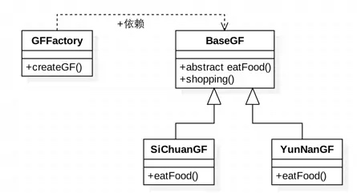
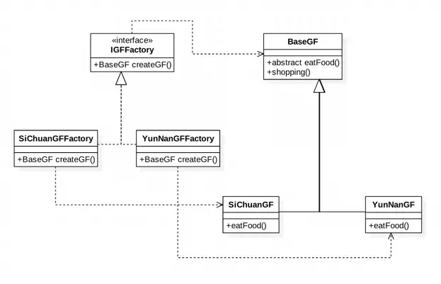
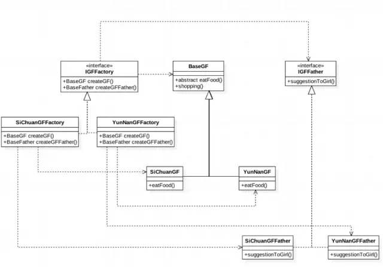

一、 简单工厂模式
- 突然有一天，在梦里拥有了阿拉丁神灯.
- 灯神说: "我可以给你创造一个女朋友哦"
- 这时候我的心里...嘿嘿嘿...
- "但是只能满足你一个地理条件，目前只有三个选项: 四川, 河北, 山东. 你挑一个? " 灯神又说.
- "那我选: 四川...或者..."
- 没等我说完，嘭的一下，出来个一个火辣的川妹子...
用代码来展示就是:
// 神灯拥有的三种选项
public enum GFType {
SI_CHUAN,
HE_BEI,
SHAN_DONG
}
// 和女朋友吃什么由她的家乡口味来定，但是shopping是一定的了 -_-
public abstract class BaseGF {
public abstract void eatFood();
public void shopping() {
System.out.println("Go shopping every day...");
};
}
public class SiChuanGF extends BaseGF {
@Override
public void eatFood() {
System.out.println("Eat sichuan food...");
}
}
public class ShanDongGF extends BaseGF {
@Override
public void eatFood() {
System.out.println("Eat shandong food...");
}
}
// 神灯为我们创建女朋友的工厂
public class GFFactory {
public static BaseGF createGF(GFType gFType) {
switch (gFType) {
case SI_CHUAN:
return new SiChuanGF();
case SHAN_DONG:
return new ShanDongGF();
default:
case HE_BEI:
return new HeBeiGF();
}
}
}
// 这个就是神灯的创建女朋友的程序了
public class Main {
public static void main(String[] args) {
BaseGF siChuanGirl = GFFactory.createGF(GFType.SI_CHUAN);
siChuanGirl.eatFood();
siChuanGirl.shopping();
// BaseGF shanDongGirl = GFFactory.createGF(GFType.SHAN_DONG);
// shanDongGirl.eatFood();
// shanDongGirl.shopping();
//
// BaseGF heBeiGirl = GFFactory.createGF(GFType.HE_BEI);
// heBeiGirl.eatFood();
// heBeiGirl.shopping();
}
}
// 有了女朋友之后是这样的 -_-
Eat sichuan food...
Go shopping every day...
// Eat shandong food...
// Go shopping every day...
// Eat hebei food...
// Go shopping every day...
简单工厂模式: 专门定义一个类用来负责创建其他类的实例，被创建的实例通常都具有共同的父类.

二、 工厂模式
- 因为我刚才还没决定，神灯就帮我把川妹子创建出来了，所以我嘟囔着，我这还没决定呢啊，大哥，你这手速有点快吧
- 神灯: "...你这个人真的是难伺候"
- 我: "我能不能要一个彩云之南的妹子? "
- 神灯: "彩云之南是哪? "
- 我: "云南啊"
- 神灯: "...你怎么这么麻烦，你知道我要改多少东西吗，我的enum(GFType)要改, GFFactory要增加case"
- 我: "神灯大哥，好人做到底么，好不好? "
- 神灯: "要不我给你一个接口好了，你自己想创建哪里的就创建那里的"
- 我的内心...嘿嘿嘿...
用代码展示就是:
// 创建女朋友的接口，想要哪里的女朋友，实现这个接口就可以了
public interface IGFFactory {
BaseGF createGF();
}
// 没有改变
public abstract class BaseGF {
public abstract void eatFood();
public void shopping() {
System.out.println("Go shopping every day...");
};
}
// 创建川妹子的工厂
public class SiChuanGFFactory implements IGFFactory {
@Override
public BaseGF createGF() {
return new SiChuanGF();
}
}
// 这个类也没有改变
public class SiChuanGF extends BaseGF {
@Override
public void eatFood() {
System.out.println("Eat sichuan food...");
}
}
// 我想要的云南的妹子的创建工厂
public class YunNanGFFactory implements IGFFactory {
@Override
public BaseGF createGF() {
return new YunNanGF();
}
}
// 云南妹子
public class YunNanGF extends BaseGF {
@Override
public void eatFood() {
System.out.println("Eat 牛干巴, 炸土豆, 小锅米线, 卤米线...");
}
}
// 这个时候一切准备就绪，创建一个云南的妹子吧...嘿嘿嘿...嘭...
public class Main {
public static void main(String[] args) {
IGFFactory yunNanGFFactory = new YunNanGFFactory();
BaseGF yunNanGF = yunNanGFFactory.createGF();
yunNanGF.eatFood();
yunNanGF.shopping();
// IGFFactory siChuanGFFactory = new SiChuanGFFactory();
// BaseGF siChuanGF = siChuanGFFactory.createGF();
// siChuanGF.eatFood();
// siChuanGF.shopping();
}
}
// 有了个云南妹子，然后就开始吃各种小吃了
Eat 牛干巴, 炸土豆, 小锅米线, 卤米线...
Go shopping every day...
// Eat sichuan food...
// Go shopping every day...
从此我和我的云南妹子过上了幸福的生活
工厂模式： 定义一个用于创建对象的接口，让子类决定实例化哪一个类。工厂方法使一个类的实例化延迟到其子类.

三、 抽象工厂模式
- 好多年以后，我准备和我的云南妹子准备结婚了. 但是我们发现好像少点什么，对，就是妹子的父母还没见啊. 然后我们去找神灯大哥帮忙.
- 神灯说: "小子，挺幸福呗"
- 我说: "还得多谢神灯大哥啊，全都靠你"
- 神灯: "来找我是不是有什么需求啊(内心: 是不是又特么改需求了)? "
- 我: "我还没见过妹子的父母咧，帮帮忙啊"
- 神灯: "..." 用代码展示(以妹子的父亲为例子):
// IGFFactory增加一个创建妹子父亲的方法
public interface IGFFactory {
BaseGF createGF();
IGFFather createGFFather();
}
// 父亲接口
public interface IGFFather {
// 对于闺女和我的事情的建议
void suggestionToGirl();
}
public class SiChuanGFFactory implements IGFFactory {
@Override
public BaseGF createGF() {
return new SiChuanGF();
}
@Override
public IGFFather createGFFather() {
return new SiChuanGFFather();
}
}
// 四川妹子的父亲实现类
public class SiChuanGFFather implements IGFFather {
@Override
public void suggestionToGirl() {
// 同意了
System.out.println("Agree ...");
}
}
public class YunNanGFFactory implements IGFFactory {
@Override
public BaseGF createGF() {
return new YunNanGF();
}
@Override
public IGFFather createGFFather() {
return new YunNanGFFather();
}
}
// 云南妹子的父亲实现类
public class YunNanGFFather implements IGFFather {
@Override
public void suggestionToGirl() {
// 不发表意见...
System.out.println("Silence ...");
}
}
// 我们又一次找到了神灯，满意了吧
public class Main {
public static void main(String[] args) {
IGFFactory yunNanGFFactory = new YunNanGFFactory();
BaseGF yunNanGF = yunNanGFFactory.createGF();
yunNanGF.eatFood();
yunNanGF.shopping();
IGFFather yunNanGFFather = yunNanGFFactory.createGFFather();
yunNanGFFather.suggestionToGirl();
// IGFFactory siChuanGFFactory = new SiChuanGFFactory();
// BaseGF siChuanGF = siChuanGFFactory.createGF();
// siChuanGF.eatFood();
// siChuanGF.shopping();
//
// IGFFather siChuanGFFather = siChuanGFFactory.createGFFather();
// siChuanGFFather.suggestionToGirl();
}
}
// 结果是这样滴...
Eat 牛干巴, 炸洋芋, 小锅米线, 卤米线...
Go shopping every day...
Silence ...
// Eat sichuan food...
// Go shopping every day...
// Agree ...
抽象工厂模式: 提供一个创建一系列相关或者相互依赖对象的接口，而无需指定他们具体的类.
